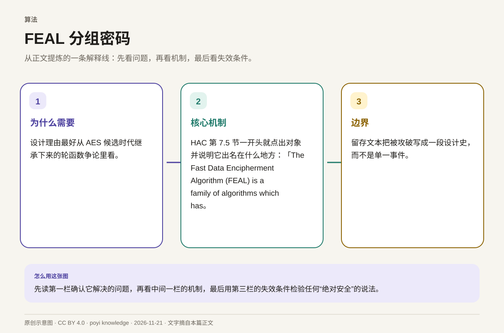
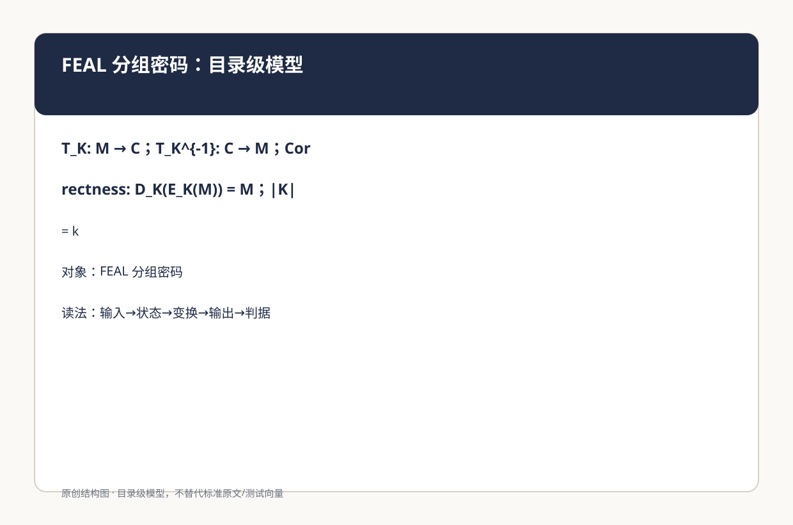

原理与机制
算法：FEAL 分组密码（Fast Data Encipherment Algorithm）。HAC 第 7.5 节一开头就点出对象并说明它出名在什么地方：「The Fast Data Encipherment Algorithm (FEAL) is a family of algorithms which has played a critical role in the development and refinement of various advanced cryptanalytic techniques, including linear and differential cryptanalysis.」（快速数据加密算法 FEAL 是一族算法，在各种高级密码分析技术的发展与打磨中起过关键作用，其中包括线性分析与差分分析）。参数就在同一行给出：「FEAL-N maps 64-bit plaintext to 64-bit ciphertext blocks under a 64-bit secret key.」（FEAL-N 在 64 位保密密钥下把 64 位明文映射为 64 位密文块）；结构表述为 「It is an N -round Feistel cipher similar to DES (cf.Equations (7.4), (7.5)), but with a far simpler f -function, and augmented by initial and final stages which XOR the two data halves as well as XOR subkeys directly onto the data halves.」（它是 N 轮的 Feistel 密码，与 DES 相像，但 f 函数远为简单，并增设首末两级，既对两个数据半区做异或，也把子密钥直接异或到数据半区上）——其中 N -round 与 f -function 里多余的空格是本抽取件对斜体记号的排印方式，此处照留。该节在第 1384 行具体写出 8 轮成员（「Algorithm 7.94 specifies FEAL-8.」（算法 7.94 给出 FEAL-8）），其轮函数用两个字节导向的 S 盒 S0、S1，各用两次。承重的一句在第 1502 行：「As the operations of 2-bit rotation and XOR are both linear, the only nonlinear elementary operation in FEAL is addition mod 256.」（由于 2 位循环与异或都是线性的，FEAL 中唯一的非线性初等运算是模 256 加法），即非线性只来自模 256 加法；同一行给出的 f 函数输入宽度是 32 与 16 的乘积，其乘号在本抽取件中字形已损，故只作转述。解密不需要第二套算法：「Decryption may be achieved using Algorithm 7.94 with the same key K and ciphertext C = (R8, L8) as the plaintext input M , but with the key schedule reversed.」（解密可用算法 7.94，取同一密钥 K、把密文 C = (R8, L8) 当作明文输入 M，但密钥编排反序进行），并且 「This is directly analogous to decryption for DES (Note 7.84).」（这与 DES 的解密直接类似）（hac-ch7-cast.txt:1513）。族记号在同节定义：第 1520 行说 「FEAL with 64-bit key can be generalized to N -rounds, N even.」（带 64 位密钥的 FEAL 可推广为 N 轮，N 为偶数），其后推荐的 N 是 2 的幂，但本留存件把指数排在基线位置，故不引用；第 1521 行说 「Extending FEAL-N to use a 128-bit key results in FEAL-NX」（把 FEAL-N 扩展为使用 128 位密钥即得 FEAL-NX），该注余下的模 3 密钥条件里的不等号在抽取时丢失，也只作转述。第 1522 行的例 7.99 用打印出来的向量钉住行为：「For hex plaintext M = 00000000 00000000 and hex key K = 01234567 89ABCDEF」（十六进制明文 M = 00000000 00000000，十六进制密钥 K = 01234567 89ABCDEF），其后给出 「Algorithm 7.94 generates FEAL-8 ciphertext C = CEEF2C86 F2490752.」（算法 7.94 产生 FEAL-8 密文 C = CEEF2C86 F2490752）

为什么重要
设计理由最好从 AES 候选时代继承下来的轮函数争论里看。Twofish 论文把 FEAL 放进 Feistel 设计的谱系：「It is the basis of most block ciphers published since then, including FEAL [SM88], GOST [GOST89], Khufu and Khafre [Mer91], LOKI [BPS90, BKPS93], CAST-128 [Ada97a], Blowfish [Sch94], and RC5 [Riv95].」（它是此后发表的大多数分组密码的基础，其中包括 FEAL、GOST、Khufu 与 Khafre、LOKI、CAST-128、Blowfish 和 RC5）（twofish-paper.txt:232），并回忆这一谱系当年争的是形状而不只是强度：「The early post-DES cipher designs would often compete on the number of rounds in the cipher.」（早期后 DES 时代的密码设计常常以轮数相互竞争），「The original FEAL paper [SM88], for example, discussed the benefits of a stronger round function」（例如最初的 FEAL 论文讨论了更强的轮函数带来的好处）（第 1226 行——印出的段落在该处结束，下一行已另起一段，所以引文只到从句为止）。之所以会选字节加法式的轮函数，正该文在表格式与代数式 S 盒之间划出的紧凑性权衡：FEAL 被点名为代数式的一类，而 「The advantage of the latter is that the S-boxes are more compact, and can be more easily implemented in applications where the ROM or RAM for large tables is not available.」（后者的优点是 S 盒更紧凑，便于在没有大容量 ROM 或 RAM 的应用里实现）（1294）。该文从 FEAL 学到的教训被写成对分析工作的设计约束：「Anecdotal evidence from algorithms like FEAL [SM88], CAST, and Blowfish indicates that complicated round functions are not always better than simple ones.」（来自 FEAL、CAST、Blowfish 一类算法的轶事证据表明，复杂的轮函数并不总是比简单的更好）（1264），而它点名的具体暴露面恰是差分文献找到的那一个：「Algebraic S-boxes can result in S-boxes that are vulnerable to differential cryptanalysis: [Mur90] against FEAL, and [Knu93a, Knu93b] against LOKI.」（代数式 S 盒可能做出易受差分分析攻击的 S 盒：对 FEAL 是 [Mur90]，对 LOKI 是 [Knu93a, Knu93b]）（1295）。该文件把一手论文引作 「Fast Data Encipherment Algorithm FEAL」（快速数据加密算法 FEAL），载于 Advances in Cryptology - EUROCRYPT '87 Proceedings, Springer-Verlag, 1988（2849）；那条目里的页码区间连接号字形已损，故不纳入引文。这一结构换来了什么，是 HAC 说的而不是这里说的：在 8 位处理器上的速度与极小的代码量、不做查表（hac-ch7-cast.txt:1383，见下文边界一节的引文）。
应用与实例
留存文本把 FEAL 的用处放在两处，且都由来源自己说出而非推测。第一处是它为之内建的环境：Biham-Shamir 专著第 6 章开篇说 「FEAL was suggested as a software-oriented cryptosystem which can be easily and efficiently implemented on microprocessors.」（FEAL 是作为面向软件的密码系统提出的，可以在微处理器上容易而高效地实现），并解释这在部件上意味着什么，「In the F function, the P permutation and the S boxes of DES are replaced by byte rotations and addition operations.」（在 F 函数里，DES 的 P 置换与 S 盒被字节循环与加法运算取代）（biham-shamir-1993.txt:5935）；该书术语表在第 10635 行得出同一结论：「FEAL: A family of DES-like cryptosystems which is designed to be easily and efficiently implementable on microprocessors.」（FEAL：一族与 DES 相似的密码系统，其设计目标是能在微处理器上容易而高效地实现） 「The F function of FEAL is based on the addition operation and byte rotation (rather than S boxes and permutations).」（FEAL 的 F 函数基于加法运算与字节循环（而不是 S 盒与置换））。第二处是设计者自己后续工作中的复用：「Another hash function is N-Hash[25] which was suggested by the designers of FEAL as a cryptographically strong hash function.」（另一个散列函数 N-Hash 由 FEAL 的设计者作为密码学强的散列函数提出）（第 262 行），该散列函数的 F 函数就建在 FEAL 的轮函数之上。本书还直接说明了这套攻击技术的来处：「Shoji Miyaguchi's FEAL cryptosystem motivated the first version of our attack」（三方 Miyaguchi 的 FEAL 密码系统促成了我们攻击的第一个版本）（第 34 行）——正因如此，本文里最先用它来试验该攻击的密码是 FEAL 而非更晚的算法。这些留存件与两份 HAC 抽取件都没有印出部署清单：没有任何产品、标准化机构或协议被指明在发售 FEAL，因此该条目不作部署史断言；HAC 关于曾作为商品提出的那一版的说法归入下节的边界讨论，因为那是留存语料关于用的最强一句。

边界与攻击面
留存文本把被攻破写成一段设计史，而不是单一事件。HAC 就前两个与商业相关的成员给出结论：「The initial commercially proposed version with 4 rounds (FEAL-4), positioned as a fast alternative to DES, was found to be considerably less secure than expected (see Table 7.10).」（最初作为商品提出的 4 轮版本 FEAL-4 被定位为 DES 的快速替代者，结果发现其安全性明显低于预期（见表 7.10）），以及 「FEAL-8 was similarly found to offer less security than planned.」（FEAL-8 同样被发现提供的安全少于计划）（hac-ch7-cast.txt:1383）；两句的所指都是轮数，同一行还补上修补它的代价：「FEAL-16 or FEAL-32 may yet offer security comparable to DES, but throughput decreases as the number of rounds rises.」（FEAL-16 或 FEAL-32 或许仍能给出可与 DES 相比的安全，但吞吐量随轮数增加而下降）。这两句所指的表在第 1523 行引出：「Table 7.10 gives various published attacks on FEAL; LC and DC denote linear and differential cryptanalysis, and times are on common personal computers or workstations.」（表 7.10 给出已发表的对 FEAL 的各项攻击；LC 与 DC 分别指线性密码分析与差分密码分析，时间是在普通个人计算机或工作站上测得的）——表体本身（1526-1555）的行分隔符与复杂度指数都被抽取损坏，因此这里不引用其中任何数字，只引用描述它的句子。本章注释承载了弱点的机制与遗留的问题：让密码变快的线性正是让它可分析的东西，因为轮函数唯一的非线性部件是模 256 加法（1502），而注释对这一权衡自己的总结是 「While it appears to remain relatively secure when iterated a sufficient number of rounds (e.g., 24 or more), this defeats its original objective of speed.」（当迭代足够多的轮数（例如 24 轮以上）时它似乎仍相对安全，但这就违背了它最初追求速度的目标）（2195）。对仍然存世的成员，留存文本报的是比较而非证明：「Ohta and Aoki [943] suggest that FEAL-32 is as secure as DES against DC, while FEAL-16 is as secure as DES against certain restricted forms of LC.」（Ohta 与 Aoki 认为 FEAL-32 在 DC 下与 DES 一样安全，而 FEAL-16 在 certain restricted forms of LC 的某些受限形式下与 DES 一样安全）（2203）。这三份来源点名的攻击都是选择明文与已知明文攻击——该密码被列为差分分析适用的密码之一，攻击清单在表 7.10——因此边界的诚实说法是：轮数才是推动安全性的那个变量，而它的代价正是这一设计原本想避开的东西。
历史与背景
有年代的顺序就印在本章注释的一段里，该条目保留它的次序与措辞。「FEAL stimulated the development of a sequence of advanced cryptanalytic techniques of unparalleled richness and utility.」（FEAL 刺激出一系列高级密码分析技术的发展，其丰富与有用前所未见）。第一条年代证据是 「FEAL-4 as presented at Eurocrypt'87 (Abstracts of Eurocrypt'87, April 1987) was found to have certain vulnerabilities by den Boer (unpublished Eurocrypt'87 rump session talk), resulting in Shimizu and Miyaguchi [1126] (or see Miyaguchi, Shiraishi, and Shimizu [887]) increasing FEAL to 8 rounds in the final proceedings.」（在 Eurocrypt'87 上提出的 FEAL-4（Eurocrypt'87 摘要集，1987 年 4 月）被 den Boer 发现存在某些脆弱点（Eurocrypt'87 私下报告会的未发表报告），致使 Shimizu 与 Miyaguchi（或见 Miyaguchi、Shiraishi 与 Shimizu）在正式会议论文中把 FEAL 增到 8 轮）（hac-ch7-cast.txt:2195）——1987 年 4 月的摘要、一次未发表的私下报告会发现、正式论文里的 8 轮。下一条是 「In 1988 den Boer [322] showed FEAL-4 vulnerable to an adaptive chosen plaintext attack with 100 to 10 000 plaintexts.」（1988 年 den Boer 证明 FEAL-4 易受 100 到 10000 条明文的自适应选择明文攻击）。注释中被算作差分分析另一个早期变体的攻击，是 1990 年对 FEAL-8 的选择明文攻击，其决定性选择是 「the bitwise XOR of each pair being selected to be an appropriate constant (thus another early variant of differential cryptanalysis).」（每对明文的按位异或都被取为一个适当的常数（因此是差分分析的另一个早期变体））（2195）；该处两位作者在本留存件里印作 Gilbert and Chasse 后面再跟一个多余的重音字符，故名字按自己的写法写出、只按行号引用。族论文紧随其后：「FEAL-N with N rounds, and its extension FEAL-NX with 128-bit key (Notes 7.97 and 7.98) were then published by Miyaguchi [884] (or see Miyaguchi et al.[885]), who nonetheless opined that chosen-plaintext attacks on FEAL-8 were not practical threats.」（带 N 轮的 FEAL-N 与带 128 位密钥的扩展 FEAL-NX（注 7.97 与 7.98）随后由 Miyaguchi 发表（或见 Miyaguchi 等），而他们仍认为对 FEAL-8 的选择明文攻击并非实际威胁）（2196）；此后反击密集出现——「Employing den Boer's G function expressing linearity in the FEAL f -function, Murphy [913] defeated FEAL-4 with 20 chosen plaintexts in under 4 hours (under 1 hour for most keys) on a Sun 3/60 workstation.」（借助 den Boer 表达 FEAL f 函数线性性的 G 函数，Murphy 用 20 条选择明文在不到 4 小时内（多数密钥不到 1 小时）攻破了 FEAL-4，用的是一台 Sun 3/60 工作站）（2196）；同段还把 Tardy-Corfdir 与 Gilbert 的统计方法记为对 FEAL-4 与 FEAL-6 的已知明文攻击，依靠 S 盒的线性近似（2196 至 2203）；而 「the first version of linear cryptanalysis (LC) introduced by Matsui and Yamagishi [798] allowed known-plaintext attack of FEAL-4」（Matsui 与 Yamagishi 引入的线性密码分析第一个版本允许对 FEAL-4 做已知明文攻击）（2196），文中给这一版本的数字是 5 条明文与 6 分钟。较长的成员方面，注释记下 「Aoki and Ohta [53] refined these ideas for FEAL-8 yielding a differential-linear attack requiring only 12 chosen texts and 35 days of computer time (cf.Table 7.10).」（Aoki 与 Ohta 把这些想法用于 FEAL-8，得到只需 12 条选择明文与 35 天机时的差分—线性攻击）（2204）以及 「Test vectors for FEAL-N and FEAL-NX (Example 7.99) are given by Miyaguchi [884].」（FEAL-N 与 FEAL-NX 的测试向量由 Miyaguchi 给出（例 7.99））（2205）。来源本身的定年也值得记录：第 1 行印着 「This is a Chapter from the Handbook of Applied Cryptography, by A.Menezes, P.van Oorschot, and S.Vanstone, CRC Press, 1996.」（本件取自应用密码学手册第 7 章，作者 A.Menezes、P.van Oorschot、S.Vanstone，CRC Press，1996 年），而第 6 行与第 2197 行反复出现的页脚把版权符号排成裸字母 c、年份写作 1997；两处都按行号引用，不合并成一个年份。
逐步示例与核验
形式模型与复算步骤
[C=E_K(P;r),\qquad P=D_K(C)]
FEAL 分组密码的公开参数、密钥/随机数与消息；变量说明：P 明文，C 密文，K 密钥，r 随机化参数。1.按算法规范编码输入。2.在密钥控制下执行轮函数。3.输出密文并检查长度与格式。边界：公式只覆盖已登记的参数与假设；参数取值、标准版本和实现细节仍以来源为准。
参考出处
- Wikipedia search entry for FEAL 分组密码. https://zh.wikipedia.org/w/index.php?search=FEAL%20%E5%88%86%E7%BB%84%E5%AF%86%E7%A0%81
- Handbook of Applied Cryptography (Menezes, van Oorschot, Vanstone). https://www.cacr.math.uwaterloo.ca/hac/